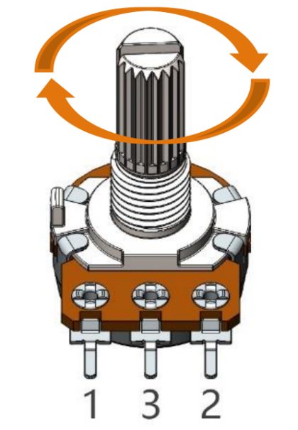
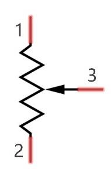

Potentiometer
{kind=link}
A potentiometer is another type of resistance component featuring three terminals, with an adjustable resistance value that follows a specific pattern of variation.
Regardless of their different shapes, sizes, and resistance values, all potentiometers share the following characteristics:
They possess three terminals (or connection points).
They include a knob, screw, or slider that can be adjusted to change the resistance between the middle terminal and either of the outer terminals.
As the knob, screw, or slider is moved, the resistance between the middle terminal and either outer terminal can vary from 0 Ω to the potentiometer’s maximum resistance.
Below is the circuit symbol typically used to represent a potentiometer.
{kind=link}
The functions of a potentiometer in a circuit include:
Serving as a Voltage Divider
A potentiometer acts as a continuously adjustable resistor. When you adjust the shaft or sliding handle, the movable contact slides along the resistor. This allows the output voltage to vary depending on the applied voltage and the position of the movable arm. This function is commonly used to derive a specific voltage from a larger range.
Serving as a Rheostat
When used as a rheostat, the potentiometer can be connected to the circuit by using the middle pin and one of the other two pins. This configuration enables you to obtain a smoothly and continuously variable resistance value within the range of the moving contact’s travel. This function is often used for adjusting current or resistance in a circuit.
Serving as a Current Controller
For a potentiometer to function as a current controller, the sliding contact terminal must be used as one of the output terminals. This setup allows for the regulation of the current flowing through the circuit by adjusting the position of the sliding contact.
If you want to know more about potentiometer, refer to: Potentiometer Wiki
Example
Potentiometer (Basic Project)